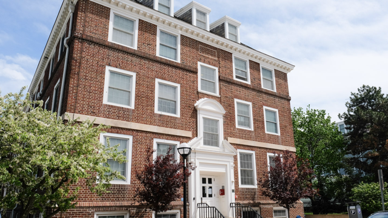

Mission
To ensure members of the University of Michigan community—whether on a tight budget or physically restrained from getting to a grocery store—receive equitable access to healthy, nutritious, and nourishing food and the ability to prepare it for themselves or others.
Vision
To create a community where all members of the University of Michigan community have access to the food they need to thrive.
Services Provided
Maize & Blue Cupboard offers a variety of services to help students, faculty, and staff:
- Food: Produce, dairy, meat, bread, frozen and shelf-stable foods (i.e. rice, cans, tuna, etc.)
- Kitchen & Cooking: Dishes, silverware, pots & pans, Tupperware, cutting boards, knives, and other kitchenware
- Personal & Household: Trash bags, toilet paper, cleaning supplies, hygiene products, school supplies, baby items and more
- Support: Get connected to campus experts like CAPS, Dean of Students and Financial Aid, as well as SNAP (Michigan’s food program)
Location & Hours
Located in the basement of the Betsy Barbour Residence Hall, enter via the Maynard entrance only to ensure privacy for residents.
- Address: 420 S. State St, Ann Arbor, MI 48109
- Phone: 734-936-2794
The Maize & Blue cupboard is by appointment only. Schedule your shopping appointment here.
